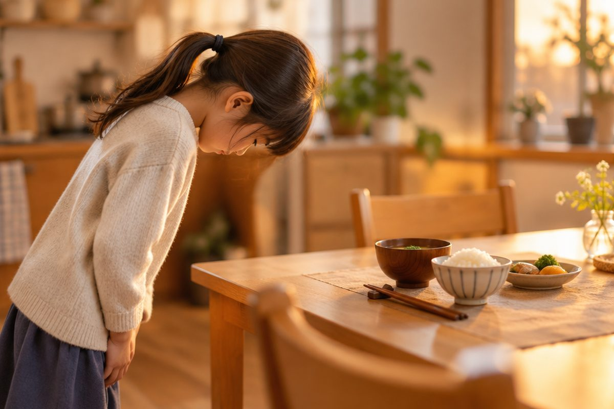

일본 친구를 만나면 어떻게 인사할까?

우리말에 '안녕하세요', '고마워요', '잘 자'가 있듯이 일본어에도 때에 맞는 인사말이 있어요. 히라가나로 인사말을 읽고, 소리 내어 따라 해 봐요.
아침, 낮, 저녁 인사가 달라요
일본어는 시간에 따라 인사말이 달라요. 아침에는 おはようございます(오하요- 고자이마스), 낮에는 こんにちは(콘니치와), 저녁에는 こんばんは(콤방와)라고 해요.
친구나 가족에게 아침 인사를 할 때는 짧게 おはよう(오하요-)라고만 해도 돼요.
こんにちは와 こんばんは의 끝 글자 は는 '하'가 아니라 '와'로 읽어요. 꼭 기억해 두세요!
아침: おはようございます(ohayou gozaimasu, 오하요- 고자이마스) / 낮: こんにちは(konnichiwa, 콘니치와) / 저녁: こんばんは(konbanwa, 콤방와)
う는 앞 소리를 길게 늘여요
おはよう는 '오하요우'라고 또박또박 읽지 않고 '오하요-' 하고 よ를 길게 늘여 읽어요. 이렇게 う가 앞 소리를 길게 만드는 경우가 많아요.
ありがとう(아리가토-), さようなら(사요-나라)도 마찬가지예요. 이 책에서는 길게 읽는 곳을 '-'로 표시했어요.
おはよう → 오하요- / ありがとう → 아리가토- / さようなら → 사요-나라
헤어질 때, 잘 때
헤어질 때는 さようなら(사요-나라)라고 해요. 친구끼리는 またね(마타네, 또 만나)를 더 자주 써요.
밤에 잠자리에 들 때는 おやすみなさい(오야스미나사이, 안녕히 주무세요)라고 해요.
またね(matane, 마타네) 또 봐 / おやすみなさい(oyasuminasai, 오야스미나사이) 잘 자요
고마워요, 미안해요, 잘 먹겠습니다
고마울 때는 ありがとう(아리가토-), 더 공손하게는 ありがとうございます(아리가토- 고자이마스)라고 해요. 가볍게 どうも(도-모)라고도 하는데, 주로 어른들이 쓰는 말이에요. 대답으로는 どういたしまして(도-이타시마시테, 천만에요)라고 해요.
미안할 때나 '저기요' 하고 부를 때는 すみません(스미마셍)이라고 해요.
처음 만난 사람에게는 はじめまして(하지메마시테, 처음 뵙겠습니다)라고 해요. 밥 먹기 전에는 いただきます(이타다키마스), 다 먹은 뒤에는 ごちそうさまでした(고치소-사마데시타)라고 해요. 일본 사람들은 인사할 때 고개를 숙이는 '오지기'를 함께 해요.
ありがとう(arigatou, 아리가토-) 고마워 / いただきます(itadakimasu, 이타다키마스) 잘 먹겠습니다
핵심 낱말
- 인사말
- 만나고 헤어질 때, 고마울 때 주고받는 말.
- 긴소리
- 앞 소리를 길게 늘여 읽는 소리. おはよう의 よう는 '요-'로 길게 읽어요.
- 오지기
- 일본에서 인사할 때 고개와 허리를 숙이는 몸짓.
꼭 알아야 할 표현
| おはようございます | 안녕하세요 (아침 인사) | ohayou gozaimasu (오하요- 고자이마스) |
| こんにちは | 안녕하세요 (낮 인사) | konnichiwa (콘니치와) — 끝의 は는 '와' |
| こんばんは | 안녕하세요 (저녁 인사) | konbanwa (콤방와) — 끝의 は는 '와' |
| さようなら | 안녕히 가세요 | sayounara (사요-나라) |
| またね | 또 봐 (친구끼리) | matane (마타네) |
| おやすみなさい | 안녕히 주무세요, 잘 자요 | oyasuminasai (오야스미나사이) |
| ありがとう | 고마워 | arigatou (아리가토-) |
| どういたしまして | 천만에요 | douitashimashite (도-이타시마시테) |
| すみません | 미안해요 / 저기요 | sumimasen (스미마셍) |
| はじめまして | 처음 뵙겠습니다 | hajimemashite (하지메마시테) |
| いただきます | 잘 먹겠습니다 | itadakimasu (이타다키마스) |
| ごちそうさまでした | 잘 먹었습니다 | gochisousama deshita (고치소-사마데시타) |
한 줄 정리
- 아침 おはようございます, 낮 こんにちは, 저녁 こんばんは로 때에 맞게 인사해요.
- こんにちは, こんばんは의 끝 は는 '와'로 읽고, おはよう의 よう는 '요-'로 길게 읽어요.
- ありがとう(고마워), すみません(미안해요), いただきます(잘 먹겠습니다)도 함께 익혀요.
학교 교육과정 연결 (가정 학습 과정)
초등학교 정규 교육과정에는 일본어가 없어요. 처음 배우는 아이를 위한 가정 학습용 입문 단원이에요.